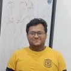
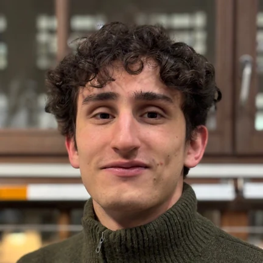

People
Faculty
-
Thomas Peyrin
Postdocs
-
Chandranan Dhar
-
Hirendra Kumar Garai
-
Zhongfeng Niu

Mostafizar Rahman
-
Liu Zhang
-
Chunning Zhou
Researchers / Engineers

Eytan Levy
-
Yihan Li
-
Hadrien Marc
-
Tingfeng Wu
PhD Students
-
Sachi Gupta
-
Adil Hasan
-
Modi Sarthak Ketanbhai
-
Aman Sinha
-
Adrien Siproudhis
joint PhD with Université Paris Cité, co-supervised with Prof. Christina Boura
-
Hans Farrell Soegeng
-
Hongyi Zhang
Visitors
- Lei Wang (Shanghai Jiao Tong University, China) - 01/09/2025 to 07/09/2025
- Soumya Sahoo (IIT Madras, India) - 01/09/2025 to 30/09/2025
- Mridul Nandi (Indian Statistical Institute, India) - 19/02/2024 to 24/02/2024
- Augustin Bariant (INRIA, France) - 06/02/2023 to 23/06/2022
- Yu Sasaki (NTT, Japan) - 28/01/2019 to 22/02/2019
- Ling Sun (Shandong University, China) - 06/02/2018 to 05/02/2019
- Gaëtan Leurent (INRIA, France) - 31/10/2018 to 08/11/2018
- Gaëtan Leurent (INRIA, France) - 16/10/2017 to 04/11/2017
- Thorsten Kranz (Ruhr-Universität Bochum, Germany) - 18/01/2017 to 07/04/2017
- Stefan Koelbl (DTU, Denmark) - 01/04/2016 to 31/05/2016
- Andrey Bogdanov (DTU, Denmark) - 29/03/2015 to 12/04/2015
- Yu Sasaki (NTT, Japan) - 05/01/2015 to 19/03/2016
- Marc Stevens (CWI – Centrum Wiskunde & Informatica, Netherlands) - 23/10/2014 to 20/01/2015
- Guoyan Zhang (Shandong University, China) - 15/09/2014 to 15/09/2015
- Seyyed Arash Azimi (Sharif University of Technology, Iran) - 16/06/2014 to 14/08/2014
- Gaëtan Leurent (INRIA, France) - 19/05/2014 to 06/06/2014
- Tetsu Iwata (Nagoya University, Japan) - 23/09/2013 to 31/12/2013
- Akshay Gupta (IIT-Delhi, India) - 01/04/2013 to 30/06/2013
- Jérémy Jean (ENS, France) - 10/09/2012 to 10/10/2012
- Yu Sasaki (NTT, Japan) - 01/07/2012 to 05/07/2012
Alumni
- Haolin Liu (Shanghai Jiao Tong University, China) - 08/2024 - 08/2026
- Mustafa Khairallah (Umeå University, Sweden) - 03/2025 - 04/2026
- Yixuan Zhou (NTU, Singapore) - 10/2024 - 10/2025
- Quan Quan Tan (Inria, France) - 05/2025 to 10/2025
- Minghui Zhao (Wisewood Capital, Singapore) - 01/2023 to 03/2025
- Tristan Guérand (Qube Research & Technologies, Singapore) - 01/2022 to 08/2025
- Peter Lorenz (Idiap, Switzerland) - 08/2024 to 07/2025
- Bishwajit Chakraborty (Huawei, Singapore) - 09/2023 to 06/2025
- Trevor Yap (Temasek Labs@NTU, Singapore) - 03/2021 to 03/2025
- Adrien Benamira (TT-logic.ai, Singapore) - 01/2020 to 06/2024
- Quan Quan Tan (CSIT, Singapore) - 08/2019 to 08/2023
- Kai Hu (Shandong University, China) - 11/2021 to 11/2023
- Sayandeep Saha (UC Louvain, Belgium) - 01/2022 to 01/2023
- Mustafa Khairallah (Seagate Research, Singapore) - 08/2016 to 07/2022
- Anubhab Baksi (Temasek Labs@NTU, Singapore) - 08/2015 to 08/2021
- Haoyang Wang (Shanghai Jiao Tong University, China) - 08/2016 to 12/2020
- Alexandre Adomnicai (CryptoNext Security, France) - 11/2019 to 10/2020
- David Gerault (University of Surrey, UK, then Technology Innovation Institute, UAE) - 08/2018 to 09/2020
- Sonu Kumar Jha (NTNU, Norway) - 08/2018 to 08/2019
- Zakaria Najm (Temasek Labs@NTU, Singapore) - 08/2017 to 08/2019
- Vesselin Velichkov (The University of Edinburgh, UK) - 05/2017 to 01/2019
- Siang Meng Sim (DSO Laboratories, Singapore) - 01/2014 to 01/2018
- Mohona Ghosh (IGDTUW, India) - 04/2016 to 04/2017
- Sumit Kumar Pandey (Ashoka University, India) - 02/2016 to 04/2017
- Ivica Nikolić (NUS, Singapore) - 04/2013 to 04/2017
- Pierre Karpman (CWI, Netherlands) - 01/2014 to 01/2017
- Dirmanto Jap (Temasek Labs@NTU, Singapore) - 01/2012 to 08/2016
- Jérémy Jean (ANSSI, France) - 01/2014 to 12/2015
- Lei Wang (Shanghai Jiao Tong University, China) - 07/2012 to 07/2015
- Jian Guo (NTU, Singapore) - 04/2013 to 10/2014
- Shuang Wu (Huawei, Singapore) - 09/2012 to 08/2013
- Nalla Anandakumar (SETS, India) - 01/2013 to 07/2013